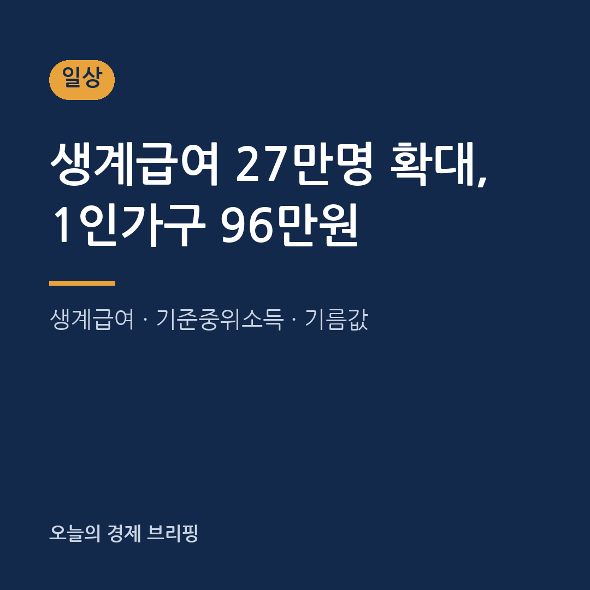
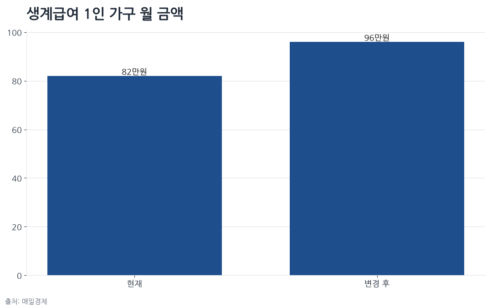

2026-11-23-1854-naver 발행 키트 · 이 페이지는 검색에 노출되지 않습니다.
제목
카테고리
일상태그
본문 (그림·표 포함)
휴대폰 블로그 앱에서는 그림이 같이 붙지 않을 수 있어요. 그때는 [글자만 복사] 후 아래 이미지를 저장해 [그래프1]·[표1] 자리에 첨부하세요.

요즘 장바구니 물가에 난방비까지, 생활비 걱정이 부쩍 커지셨죠? 이럴 때일수록 나라에서 받을 수 있는 지원이 뭔지 한 번쯤 챙겨 보면 좋아요. 오늘은 새로 발표된 생계급여 확대와 기름값 이야기를 생활 관점에서 정리해 볼게요.
▶ 생계급여, 받을 수 있는 사람이 넓어져요
정부가 생계급여(소득이 적은 가구에 생활비를 현금으로 주는 제도)를 받을 수 있는 기준을 올리기로 했어요. 지금은 기준중위소득(전체 가구를 소득순으로 세웠을 때 한가운데 가구의 소득)의 32%인데, 2030년까지 35%로 단계적으로 높인다고 해요.
이렇게 되면 대상자가 27만명 늘어난다고 매일경제가 전했어요. 1인 가구 기준으로는 월 82만원에서 96만원으로 올라가는 것으로 소개됐고요.
생계급여 확대 한눈에
| 항목 | 내용 |
|---|---|
| 선정 기준 | 기준중위소득 32%에서 2030년까지 35%로 |
| 대상 확대 | 27만명 |
| 1인 가구 금액 | 월 82만원에서 96만원 |
| 중증장애인 가구 | 내년 하반기부터 판단 방식 변경 |
| 확인처 | 주민센터 |
출처: 매일경제
▶ 숫자로 보면 이렇게 달라져요
기준이 높아지면 지금까지는 소득이 조금 많아서 탈락했던 분도 새로 들어올 수 있어요. 그래서 "나는 안 되겠지" 하고 넘기기 전에 확인해 보는 게 중요해요.

다만 이 그래프의 두 숫자는 기사에 소개된 1인 가구 기준 금액이에요. 가구원 수가 다르면 금액도 다르니까, 우리 집 기준은 따로 확인하셔야 해요.
▶ 중증장애인 가구도 내년 하반기부터 달라져요
내년 하반기부터는 중증장애인 가구가 생계급여와 의료급여를 받을 수 있는지 판단하는 방식도 바뀐다고 해요. 부모와 관련된 판단 기준이 손질되는 것으로 보도됐는데, 세부 내용은 제가 이번 자료로 확인하지 못했어요.
해당되는 가족이 있다면 구체적인 조건은 주민센터(읍면동 행정복지센터)에 물어보시는 게 가장 정확해요.
▶ 기름값 걱정은 조금 덜 수 있을까요
난방과 출퇴근에 쓰는 기름값도 큰 부담이죠. 정부는 지난 3월부터 시행 중인 석유 최고가격제를 내년에도 일정 기간 유지하겠다고 밝혔어요.
이 제도는 중동 전쟁으로 국제 유가가 오른 영향을 줄이려는 거예요. 물류와 난방 같은 생활 부문의 부담을 고려했다고 해요. 다만 얼마나 오래 유지할지는 아직 정해진 게 없어요.
▶ 지금 해 볼 수 있는 체크리스트
첫째, 우리 가구의 소득과 재산이 새 기준에 해당될 수 있는지 주민센터에 문의해 보세요.
둘째, 이웃이나 부모님 중에 어려운 형편인데 신청하지 않은 분이 계신지 살펴보세요. 이런 제도는 신청해야 받을 수 있는 경우가 많아요.
셋째, 새 기준은 단계적으로 적용되니 시행 시기를 꼭 확인하세요. 오늘 당장 달라지는 건 아니라는 점도 기억해 두세요.
▶ 한 줄 정리
생계급여 기준은 32%에서 2030년까지 35%로 올라가고, 기름값 최고가격제는 내년에도 이어져요. 여러분 주변에서 이런 지원 몰라서 못 받는 분은 없나요? 댓글로 이야기 나눠 주세요.
출처 (본문 맨 아래에 붙여넣기 권장)
- 매일경제, 생계급여 대상 확대 관련 기사, https://www.mk.co.kr/news/economy/12216386 - 매일경제, 석유 최고가격제 유지 관련 기사, https://www.mk.co.kr/news/economy/12216384